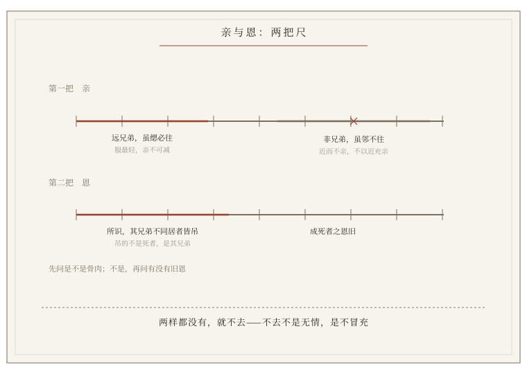

檀弓上 · 三·一百一十一 · 第 314 课
有殡，闻远兄弟之丧，虽缌必往；非兄弟，虽邻不往。所识，其兄弟不同居者皆吊。
说什么事：自家有柩在堂，人不得远出。然而听得远房兄弟之丧，虽是缌麻之亲，也必往。不是兄弟，虽是紧邻，也不往。平素相识的人，其兄弟不同居者死了，也去吊。
落在哪一层：以「亲」与「恩」两把尺量人。论「礼不以亲等之表一刀切」。
为何编在此位：本批自三百一十一课起，转入「尺」的问题——凡不可计量之事，礼都给它一把可以计量的尺。此课是第一把：量人。
【经】有殯，聞遠兄弟之喪，雖緦必往；非兄弟，雖鄰不往。所識，其兄弟不同居者皆吊。
【注】親骨肉也。疏無親也。就其家吊之，成恩舊也。
【疏】此一节论哭吊之事。「所识，其兄弟不同居者皆吊」者，此文连上「有殡」之下：若其骨血兄弟，虽缌必往；若其非兄弟骨血疏外之人，虽邻不往。今有既非兄弟，又非疏外，平生所共知识、往来同恩好，今若身死者，兄弟虽不同居，亦就往吊之，成其死者之恩旧也。其死者兄弟不同居，尚往吊之，则死者子孙就吊可知，举疏以见亲也。已有殡得吊之者，以其死者与我有恩旧也。皇氏以为别更起文，不连「有殡」之事，「所识」者谓识其死者之兄弟，是小功以下之亲，既识兄弟，虽不同居，皆一一就吊之。未知然否，故两存焉。
有殡 自家有柩在堂未葬。殡者，停柩待葬。
远兄弟 远房兄弟，服属已疏者。
缌 缌麻，三月，五服之最轻。
虽邻不往 邻，居处相邻。虽近而不往。
所识 平素相识、有往来者。注疏皆不与「兄弟」连读。
皆吊 一一往吊。吊者，慰其家。
恩旧 旧有恩谊。
自家有柩在堂，听得远房兄弟死了，虽是缌麻之亲也必去。不是兄弟，虽是紧邻也不去。平素相识的人，若他的兄弟不同居而死了，也去吊。
三条判，两把尺。
第一条「虽缌必往」，尺是亲——缌是最轻的服，但仍属骨肉，故不留余地。第二条「虽邻不往」，尺仍是亲的反面——邻再近，非骨肉，不往。第三条「所识，其兄弟不同居者皆吊」，尺换了，是恩——不是亲，是旧有恩好；所吊的也不是死者本人，是其兄弟。
所以此节的算法是两步：先问是不是骨肉，是则按服之轻重一概都去；不是，再问有没有旧恩，有则去，无则虽邻不往。
亲与恩，是礼量人的两把尺。除此之外，礼不认第三样东西——不认距离，不认面子，不认「顺便」。
第一层 最轻的服，最重的义务 缌麻三月，是五服之末，服之最轻者。而经作「必往」——「必」字不留余地。
礼的底线，不在服之厚薄，在是不是同一血。服可以轻到近乎无，亲不可减到无。这是礼算人的第一条：先看血，后看服。
第二层 最近的距，最清楚的不 「非兄弟，虽邻不往。」邻是空间之近。礼不认空间，只认血与恩。
今人往来，多以「住得近」「常见面」为理由。此节正相反：近而不亲，则礼不许你以近充亲。这一条今日犹有用——它防止人拿「熟」冒充「亲」。
第三层 「所识」一条的曲折 所识者去吊的，不是死者，是其兄弟。为何？
疏说得明白：死者与其兄弟不同居，则死者那一支已无人承其哀；故就其兄弟之家吊之，「成其死者之恩旧」。又补一句「举疏以见亲」——连疏的兄弟都吊，亲的子孙更不待言。这是以推见之法立法：经只写最外一层，内层自明。
第四层 皇氏异说与「两存」 皇侃把「所识」另起一文，解为「识其死者之兄弟，是小功以下之亲」。如此则第三条与上两条各为一事，非连读。
疏不驳，只说「未知然否，故两存焉」。这不是含糊。礼疏的常态是：一义可两存，不强断。文本有歧，注家不掩饰——这种做法本身，就是一种礼。
与今日何干 今人吊丧，多以「关系远近」临时斟酌，多以「认不认识」为断。此节给的算法更硬：先看血，再看恩，两样都没有就不去。不去不是无情，是不冒充。
| 左 | 右 |
|---|---|
| 有殡 | 不得远出 |
| 远兄弟，虽缌 | 亲之尺，必往 |
| 非兄弟，虽邻 | 不往 |
| 所识 | 恩之尺 |
| 其兄弟不同居者 | 吊之对象 |
| 皆吊 | 成死者之恩旧 |
| 举疏以见亲 | 以推立法 |
| 皇氏别起文 | 疏两存 |
画一处丧次，视点平视，略偏门外。堂上一具柩，覆素帷，帷下垂至地。堂阶下一人将行，只画衣与履、背身向门外，腰间一道麻绖；门外远处另有一家门，淡而虚。不画人面、不写文字。赭色只用在将行者腰间那道绖，与远处门上一道门框线。
